✈️ 航空聯盟與里程：同一聯盟的航空公司，通常可以互相累積與兌換里程，例如搭長榮（星空聯盟）累積的里程，可以兌換全日空、新加坡航空的機票。未加入聯盟的航空公司，也可能有自己的合作夥伴。實際累積比例與兌換規則，請以各航空公司里程計畫的最新公告為準。看更多：航空里程小百科 →
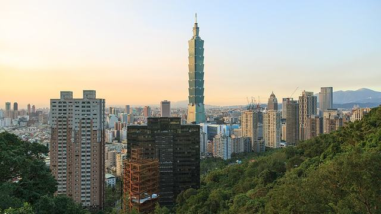
台灣最大國際門戶，搭機場捷運約 35 分鐘到台北車站，北部各地都方便轉乘。周邊旅遊台北、新北、桃園、新竹（北部各地）照片：CEphoto, Uwe Aranas／CC BY-SA 3.0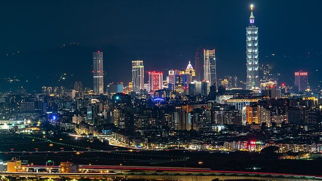
位在台北市區，搭捷運文湖線就到，飛日韓上海商務客最愛，省下往返桃園的時間。周邊旅遊台北市區、新北、基隆、宜蘭照片：xiangyang17／CC BY-SA 2.0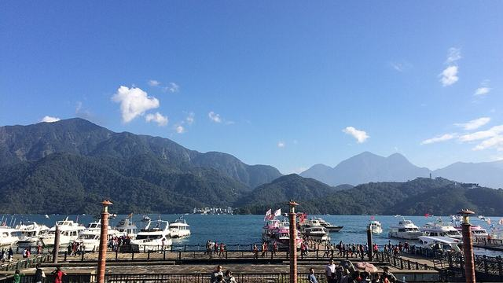
中台灣國際機場，可順遊台中市區、彰化鹿港老街與南投日月潭。周邊旅遊台中、彰化、南投日月潭、苗栗照片：LowensteinYang／CC BY-SA 4.0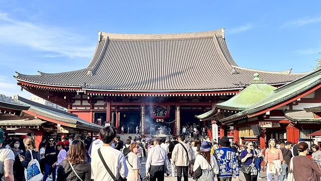
東京主要國際機場之一，搭 Skyliner 約 40 分到上野，迪士尼樂園也方便前往。周邊旅遊東京、千葉、成田山、東京迪士尼照片：Akonnchiroll／CC0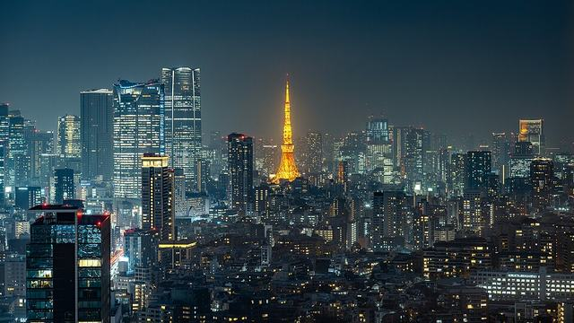
離東京市區最近的機場，電車約 15–30 分鐘，轉往橫濱、鎌倉、箱根都順。周邊旅遊東京市區、橫濱、鎌倉、箱根照片：Wikimedia Commons／CC BY 4.0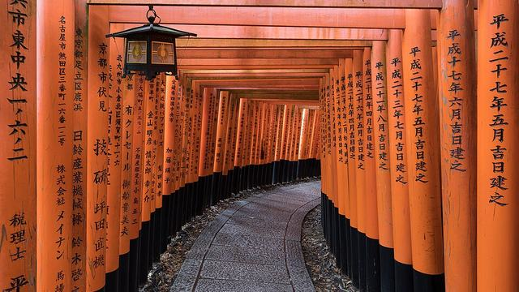
關西旅遊大門，一次玩大阪、京都、奈良、神戶，是台灣人最愛航點之一。周邊旅遊大阪、京都、奈良、神戶、和歌山照片：Basile Morin／CC BY-SA 4.0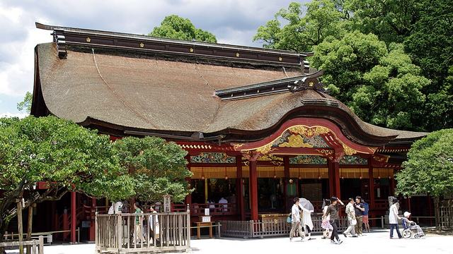
離市區最近的機場之一，地鐵 5 分鐘到博多，吃拉麵、屋台、逛太宰府。周邊旅遊福岡、太宰府、門司港、佐賀、長崎（陸路）照片：Jakub Hałun／CC BY-SA 4.0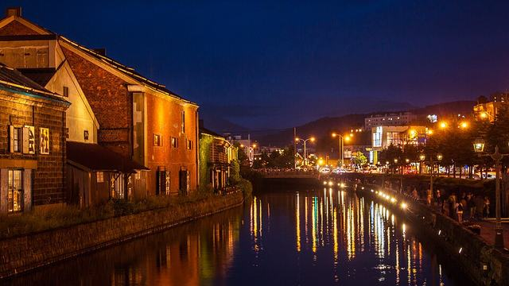
北海道主要門戶，冬季賞雪泡湯、夏季富良野薰衣草花田。周邊旅遊札幌、小樽、登別、洞爺湖、富良野、美瑛照片：Tan Wei Liang Byorn／CC BY-SA 4.0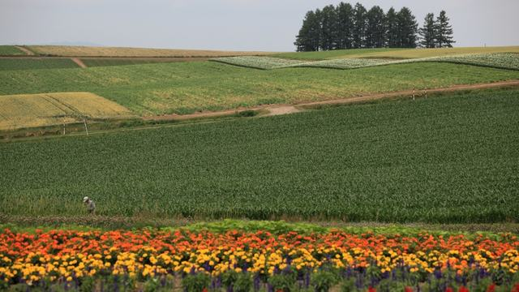
道北門戶，美瑛青池、富良野花田與旭山動物園都在附近。周邊旅遊旭川、美瑛、富良野、層雲峽照片：Jialiang Gao www.peace-on-earth.org／CC BY-SA 3.0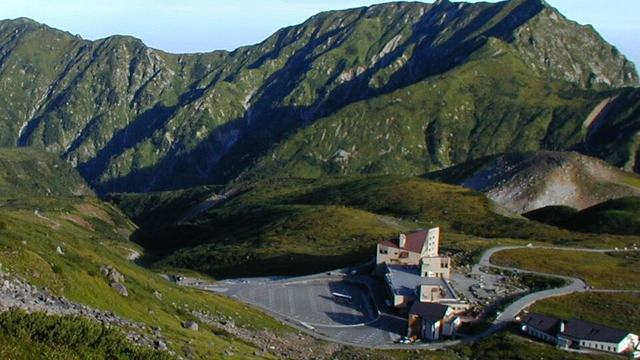
立山黑部雪之大谷的門戶，春季可走在 10 幾公尺高的雪牆間。周邊旅遊富山、立山黑部、五箇山、金澤照片：Papakuro at Japanese Wikipedia／CC BY 3.0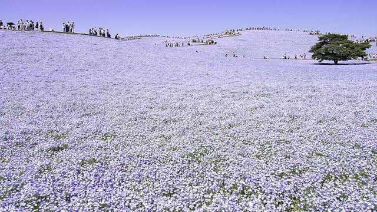
日立海濱公園的粉蝶花、掃帚草海超夢幻，也有巴士直達東京。周邊旅遊水戶、日立海濱公園、筑波、東京（巴士約 2 小時）照片：Kakidai／CC BY-SA 4.0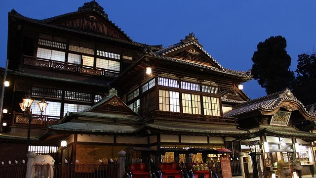
四國愛媛的門戶，日本最古老溫泉之一的道後溫泉就在這裡。周邊旅遊松山、道後溫泉、今治、內子照片：Japanexperterna.se／CC BY-SA 3.0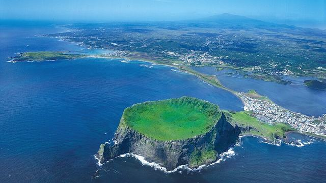
韓國最大度假島，城山日出峰、漢拏山與油菜花田。周邊旅遊濟州島、西歸浦、城山日出峰照片：Korea.net / Korean Culture and Information Service／CC BY-SA 2.0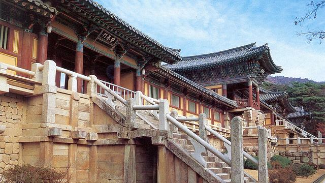
韓國第四大城，可順遊千年古都慶州與安東河回村。周邊旅遊大邱、慶州、安東照片：Unknown authorUnknown author／Public domain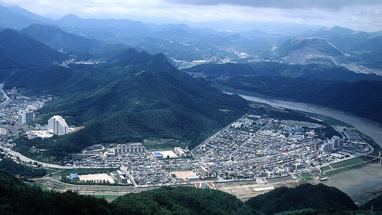
韓國中部門戶，可前往丹陽、大田等較少觀光客的地區。周邊旅遊清州、大田、丹陽、忠清道照片：Academy of Korean Studies／KOGL Type 1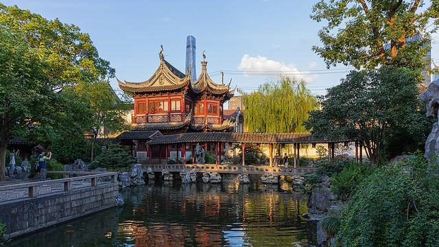
位在上海市區西側，鄰近高鐵站，轉往蘇杭非常方便。周邊旅遊上海市區、蘇州、無錫、杭州（高鐵）照片：Stefan Fussan／CC BY-SA 3.0找不到相關的航空公司或機場，直接問小幫手吧！
💬 加 LINE 詢問小幫手※ 航線、航點、航空聯盟成員與航空公司營運狀況會隨時調整，部分航點為季節性或包機航班。資訊僅供參考，請依各航空公司最新公告為準，如有疑問請加入 LINE 洽詢。
航空公司標誌來源：Wikimedia Commons（公有領域）。各標誌為該航空公司之商標，本站僅用於辨識並連結至其官方網站；部分航空公司標誌由本公司提供。機場代表照片來自 Wikimedia Commons，依各照片標示之創用 CC 等授權使用，作者與授權標示於每張照片下方。